The Tokugawa shogunate came into existence in 1603 when Emperor Go-Yozei appointed Tokugawa Ieyasu as shogun. Ieyasu was now effectively a military dictator, holding the highest position in the warrior (samurai) class. Ieyasu based his shogunate government (bakufu) in Edo, then a small fishing village in the Kanto plain in eastern Japan. As the country was just in the midst of a period of civil war between different daimyo, he implemented a series of measures to ensure peace and stability in the realm. These would be carried out by him and two immediate successors: Hidetada and Iemitsu.
One major problem was that of the daimyo. Ieyasu became the supreme military overlord of Japan after the Battle of Sekigahara in 1600 when he and other daimyo loyal to him defeated a coalition of daimyo opposed to him. With the lords who posed the biggest threat to his regime executed after the battle, all the others were required to pledge their allegiance to him. There were daimyo that the Tokugawa perceived still to be a threat, so fiefs were distributed to the different lords accordingly. The Lords opposed to Ieyasu at the time of Sekigahara were classed as tozama daimyo, and were granted lands far away from Edo; the most trusted Lords, fudai daimyo, were given lands closer to Edo or in strategic areas. A further measure to keep the daimyo in check was the policy of sankin-kotai, which required the daimyo to alternate each year between residing in their domain and the shogunal capital of Edo; their families and heir were confined to Edo, technically hostages. This served two functions: to act as a fiscal check on each domain so that no domain could grow too financially powerful, having the responsibility of maintaining a residence in Edo and covering the cost of their procession to the capital; the other function was for the Bakufu to keep a watchful eye over daimyo activities, gaining intelligence on them and pre-empt any possible intrigue that could be planned. Political participation in the bakufu central government was reserved only for fudai daimyo, though tozama daimyo were granted domains that were usually larger and had greater yields as a form of compensation to content them for their lack of power.
Though Ieyasu was now shogun, Hideyoshi's heir Hideyori was still alive and resided at Osaka Castle. Initially, his existence was tolerated by the Bakufu as they did not see the child as being particularly skilled and as not posing a significant threat. This would change a few years later as Hideyori grew older and more capable, and the Tokugawa realised that he could be propped up as a leader by anti-Tokugawa dissidents if a rebellion were to be staged. An inscription on a temple bell that was sponsored by Hideyori provided a pretext to exterminate the remaining members of Toyotomi clan. The inscription's characters were supposed to be auspicious messages for peace and stability, but the Tokugawa, interpreting the characters by their alternative reading, took it that the inscription was defaming Ieyasu's name and advocating for the destruction of the Tokugawa shogunate. Tensions arose between Hideyori and Ieyasu, and this culminated in the final campaign of the Sengoku period (1467-1615), the Siege of Osaka Castle. During this battle, which lasted from 1614-1615, Ieyasu besieged Osaka castle, even bombarding the castle with cannon fire, cannons being introduced to Japan in the previous decades. In the end, Hideyori was defeated and killed, and the Toyotomi clan, the last major opposition to the new Tokugawa regime, was destroyed. This would also be Ieyasu's last campaign, as he died the next year in 1616 after fighting for over fifty years to establish his family as the ruling house of Japan.
Another major issue for the Tokugawa Bakufu in the early 17th century was that of foreign affairs. Europeans first arrived in Japan in 1543 in the form of Portuguese sailors, who introduced matchlock guns to Japanese warfare. Foreign presence in Japan was concentrated primarily on the island of Kyushu in western Japan, where Portuguese traders operated in ports and missionaries preached Christianity to the locals. When the Tokugawa came to power, they experimented with foreign trade but came gradually to eschew from foreign affairs. Christianity was perceived as a grave threat to Tokugawa society and seen as a means to destabilise the mainly Shinto/Buddhist population. Various piecemeal restrictions on the practice of Christianity were introduced in the early decades of Tokugawa rule. This crackdown saw the crucifixion of European missionaries and Japanese Christians, Kyushu being a major Christian centre. When a revolt, known as the Shimabara Rebellion, occurred in Kyushu in 1637 and was composed mainly of Japanese Christians, the Bakufu suppressed it viciously with support from the Dutch.
The Bakufu had already put edicts in place in 1633 to restrict and limit foreign trade. More edicts would be introduced in the succeeding years, but another - of extreme severity - was prompted by the Shimabara rebellion. All foreigners were expelled from the country, no foreign trade was to be conducted and Christianity would not be tolerated. No Japanese person could leave the country and no foreigner could enter. This policy of seclusion was known as sakoku. However, Japan was not completely isolated. As a reward for their assistance in suppressing the Shimabara rebellion, the Dutch were permitted exclusive trading rights that could be exercised only at Nagasaki. Nagasaki thus became the only point of contact between Japan and the outside world, the Dutch having a permanent trading post on the artificial island of Dejima in Nagasaki Harbour. There was also a small trade occurring in the harbour with China. The Dutch trade was important for the Bakufu as the Dutch kept them informed of events and developments that were occurring elsewhere in the world. The Dutch made regular annual missions to Edo to have an audience with, and pay homage to, the shogun. Trade was very limited, but an important item of luxury that had importance later in the Edo period was Dutch books. Though being reviewed by censors before entering the country, these books were confined to small circles of intellectuals or officials, and a field of study of Dutch books (rangaku) saw some curious Japanese experiment with European science, medicine and culture to improve Japanese knowledge of these subjects.
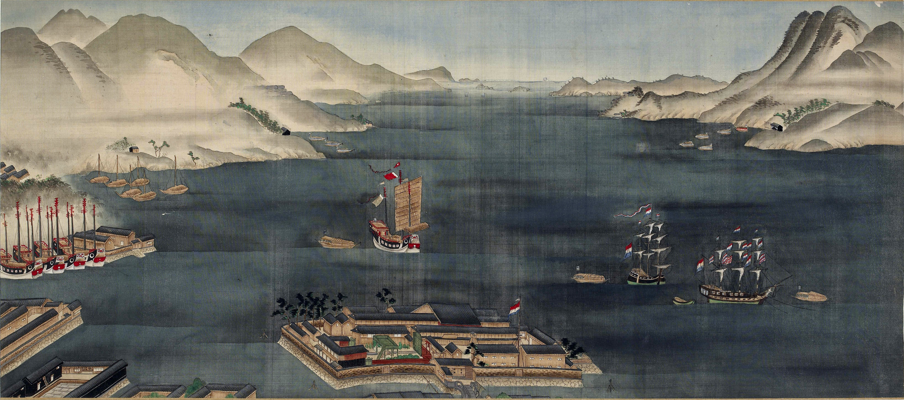
Nagasaki Bay with the Dutch Outpost of Dejima visible in the foreground
The Tokugawa obsession with stability is manifested greatest in the rigid and robust social structure that defined Edo society. The Tokugawa regime used Neo-Confucianism as the basis for the social hierarchy of their ideal Japan. At the top of the hierarchy was the Emperor, based in Kyoto, who was only a figurehead and exercised only a ceremonial role. Beneath was the shogun, the de facto ruler of Japan and highest figure in the warrior class. Below the shogun were the approximately 250 daimyo whose duty it was to administer their domains and collect taxes. The next echelon of society was the samurai, the warrior class of Japan who possessed special privileges, such as the right to wield a sword. Higher-ranking members of the samurai class could hold administrative roles, ranging from tax collectors or advisors to daimyo. Each samurai received a stipend from their lord. Below the samurai were commoners which included, in order of decreasing importance, farmers, artisans and merchants. Farmers worked in fields, primarily rice paddies, in rural villages; due to natural disasters and bad harvest years, life was very difficult for most as they were taxed between 40-70% percent of their harvest and were prone to starvation or even famine in the very worst years. They were the core of Japanese society, feeding the population with their yields. Artisans were skilled labourers in certain types of work, such as printmakers, blacksmiths, plasterers, etc. Merchants were placed at the very base of the social hierarchy due to the Confucian perception of their role in society, which judged them as not contributing to society but instead profiting off the work and toils of others. Social mobility in Tokugawa society was extremely rare, with moving down the social hierarchy being far easier than advancing upward.
One effect of the long period of peace ushered in by Tokugawa policies was prosperity. The population of the country began to increase as the period progressed due to the absence of war and the flourishing of agriculture. Commerce within Japan developed due to these favourable conditions, with cities such as Osaka becoming financial centres and improved communications with major highways connecting major population centres, such as the Tokaido road that connected Edo with Kyoto. It was the merchant class who enjoyed this prosperity the most. Many merchants became extremely wealthy through various enterprises such as moneylending or being rice brokers. Some even ran domain monopolies in certain commodities. This prosperity saw them attaining greater influence in society and exceeding or flaunting the conduct they were supposed to adhere to according to their low status in society. The case of samurai completely contrasts the case of merchants. The samurai carried a military role which they could not perform in the Edo period as it was a time of peace, so they gradually transformed into bureaucrats in domains or in the bakufu itself. However, they began to suffer from financial problems in the latter half of the period, especially impacting lower-ranking samurai. A source of impoverishment was when samurai took loans from merchants, becoming indebted usually as a result of high interest rates. The consequences of this would become apparent in the early 19th century.
The Edo period was a time of tranquility which facilitated the flourishing of culture and the arts. The new shogunal capital, Edo, grew rapidly in population, so much so that by about 1720 it hosted a population of over one million people making it the largest city in the world at the time. The city is often subdivided into two halves: Yamanote, the western part of the city which was higher in elevation and the location for the residences of the daimyo and other higher ranking samurai officials; and Shitamachi, "the low city", the eastern part which was the home of the crowded districts of the common people. At the center of the city, surrounded and protected by a series of moats and rivers was Edo Castle, the seat of the shogun. Edo castle in the early 17th century was famous for its keep, whose dimensions were hitherto unseen in Japan. It rose to 60 metres and represented the might of the Tokugawa rulers. However, Edo would suffer from a devastating fire in 1657. The Great Meireki Fire destroyed large swathes of the city, and Edo castle with its keep fell victim to the flames and was destroyed. Approximately 100,000 people died in the fire; for context, the Great Fire of London in 1666, almost nine years after Edo's Meireki Fire, is known to have killed only about six people. Citywide conflagrations were a characteristic trait of Edo, as the primary building material was wood, and Edo would suffer other fires over the course of the Edo period.
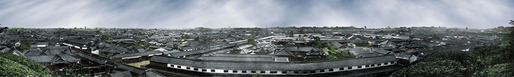
Photographic Panorama of Edo taken by Felice Beato c. 1865-6
Edo was the center of a new form of urban culture that began to emerge in the early decades of the period. It was home to a great many craftsmen and artists, as well as performers and actors of various kinds. The new culture was termed the floating world (ukiyo) and was characterised by the hedonistic lifestyle of Edo citizens and their consumption of the new and thrilling pleasures that were available in the novel urban environment. One form of entertainment that came into being during the early Edo period was a form of theatre known as kabuki. Kabuki originated in Kyoto at the start of the period from street performances staged by Izumo no Okuni, a shrine maiden. This style of theatre would become very popular and spread across the country, being commonplace in the red-light districts of Edo. Some audience members brawled over actresses (mainly because they provided other services to their patrons) and this resulted women from being banned from Kabuki. All characters were played by male actors. Kabuki is well-known for the face paint, known as kumadori, worn by the actors. Like Noh, Kabuki is a type of dance-drama with emphasis being placed on exaggerated facial expressions and precise movements and vocal range. Kabuki especially flourished during the time of the fifth shogun Tokugawa Tsuneyoshi (r. 1680-1709), who presided over the Genroku era, seen as a cultural golden age. Some families, an example being the Ichikawa family, were traditional masters of Kabuki theatre. Themes of Kabuki plays varied from historical events, love, and comedy. There was even an entire genre of plays written in the 18th century based on the story of 47 Ronin, who killed a lord named Kira Yoshinaka in 1703 to avenge the death of their lord. Chikamatsu Monzaemon is a famous playwright who wrote such plays.
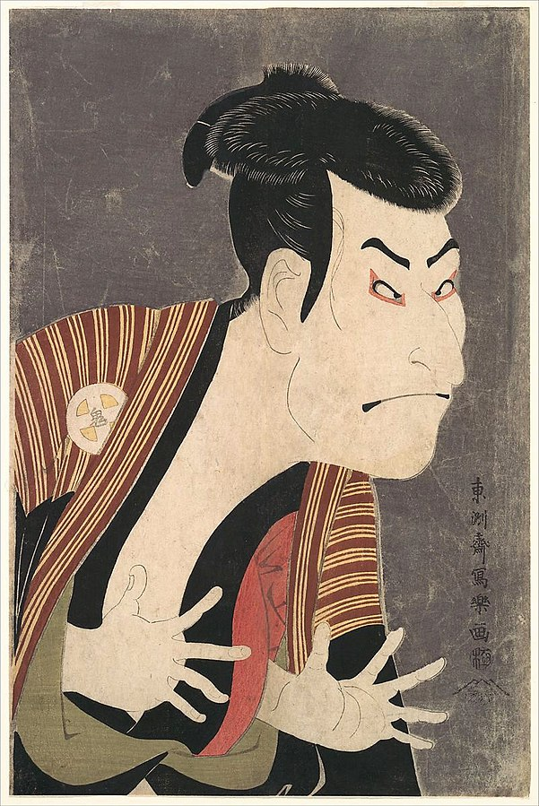
Toshusai Sharaku - Otani Oniji III as Yakko Edobei
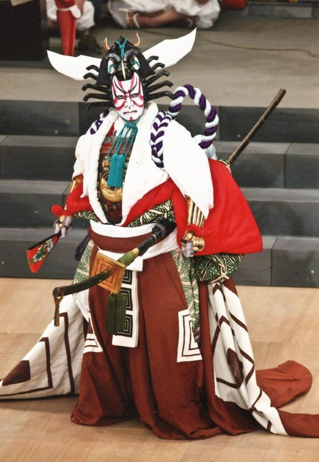
Ichikawa Danjuro XIII playing Kamakura Gongoro Kagemasa in the kabuki play "Shibaraku"
Another iconic and defining art form to appear in the Edo period was woodblock printing. The woodblock prints of the Edo era were known as ukiyo-e ("Pictures of the Floating World"), and they depicted aspects of the daily life of commoners in the Edo period. Prints were mass produced by publishers for such purposes as advertising kabuki plays or as souvenirs and pictures to be bought by people. Ukiyo-e prints depicted a wide range of subjects from the prostitutes and courtesans of the Yoshiwara, Edo's red-light district; natural and urban landscapes; kabuki actors as well as historical events. Kitagawa Utamaro was famous for his depictions of the beautiful women of Edo in the late 18th century. Sharaku, active briefly in the 1790s, was well known for his short run of prints depicting kabuki actors. In the 19th century, we see the most famous masters of the Ukiyo-e movement. Hokusai is perhaps the most famous, being the artist behind such series of prints as Thirty-Six Views of Mount Fuji, which includes his monumental masterpiece The Great Wave off Kanagawa, produced sometime around 1831. Utagawa Hiroshige is equally admired as Hokusai, and he was a major artistic inspiration for Vincent Van Gogh when his prints began to be exhibited in Europe after the end of the Edo period. His most famous series of prints was One Hundred Famous Views of Edo, comprising approximately 120 prints of various landmarks around Edo in the 1850s. These prints show a peaceful Japan, despite the political turmoil that was ongoing in Japan at the time as the Tokugawa shogunate was in decline in the face of the forced opening of the country by European powers.
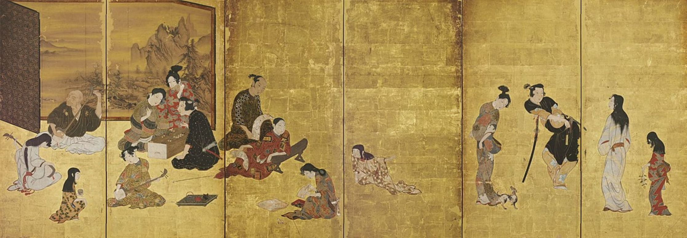
Hikone Screen, an early ukiyo-e depiction c. 1624 - 1644
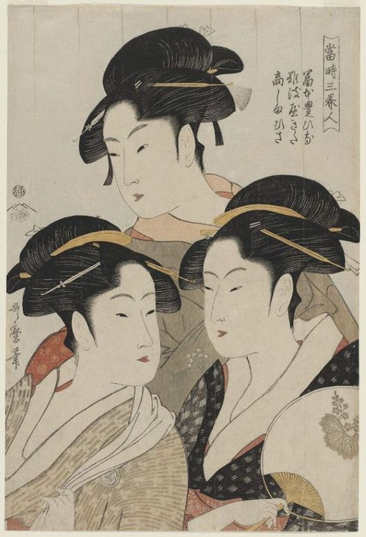
Kitagawa Utamaro - Three Beauties of the Present Day c. 1792-3
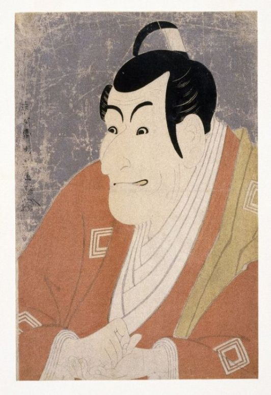
Toshusai Sharaku - Ichikawa Ebizo IV as Takemura Sadanoshin c. 1794
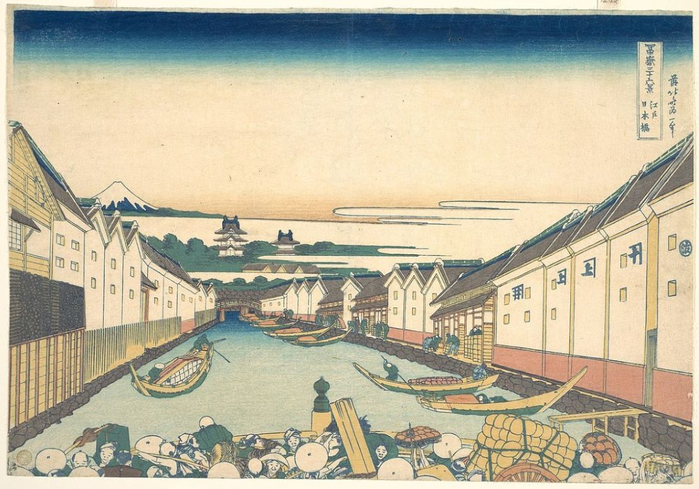
Hokusai - Thirty-Six Views of Mount Fuji: Nihonbashi in Edo c. 1831
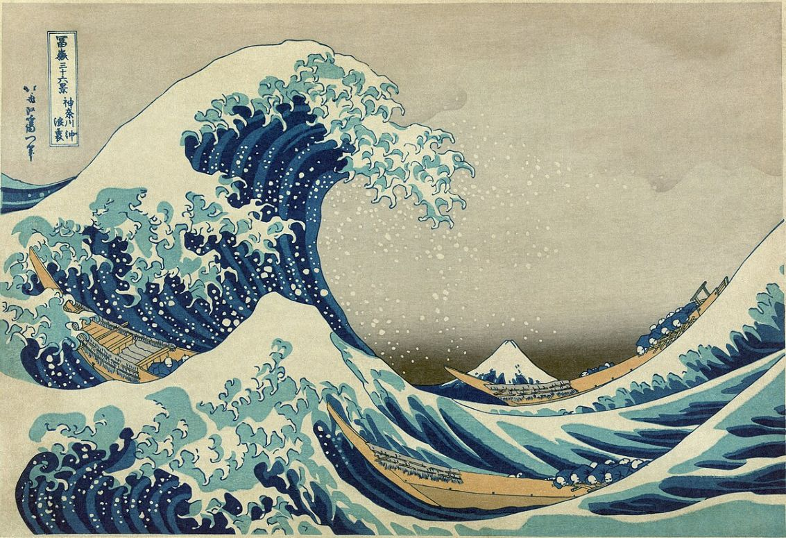
Hokusai - Thirty-Six Views of Mount Fuji: The Great Wave off Kanagawa c. 1831
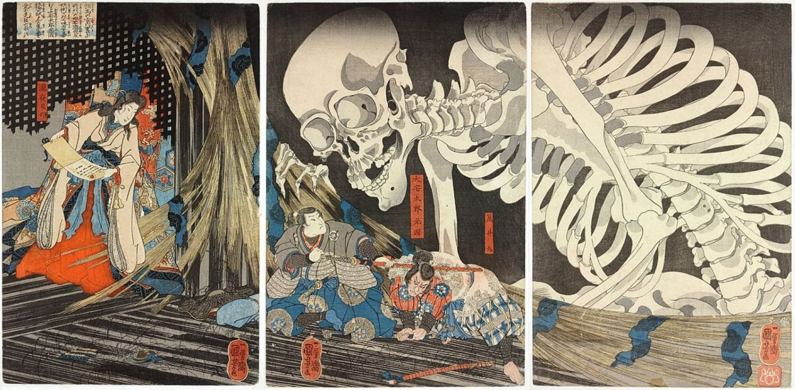
Utagawa Kuniyoshi - Takiyasha the Witch and the Skeleton Spectre c. 1844
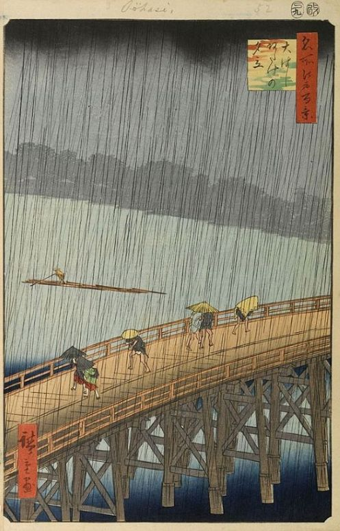
Utagawa Hiroshige - One Hundred Famous Views of Edo: Sudden Shower over Shin-Ohashi Bridge and Atake 1857
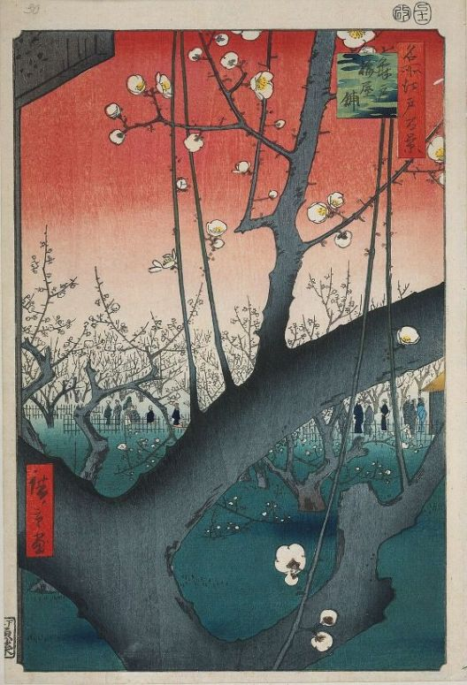
Utagawa Hiroshige - One Hundred Famous Views of Edo: Plum Garden at Kameido 1857
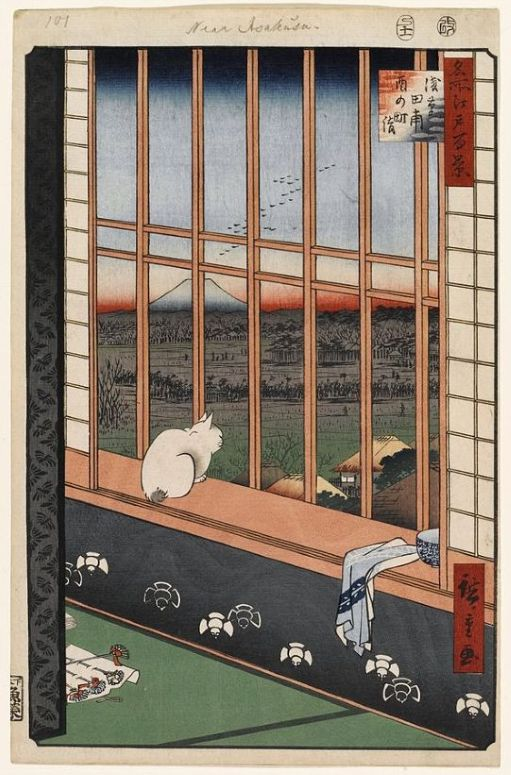
Utagawa Hiroshige - One Hundred Famous Views of Edo: Asakusa Ricefields and Torinomachi Festival 1857
While these arts flourished, the classical and refined arts of the previous eras continued to be enjoyed, especially by the ruling classes. Noh plays were still staged, and poetry was still being composed in the time-honoured way. A new form of poetry was popularised during the Edo period by a poet named Mutsuo Basho. His form of poetry was known as haiku, and it followed a strict rule of a 5-7-5 syllable meter. Haiku is probably the best known type of poetry originating in Japan, and it demonstrates the cultural innovations that were made in Japan during the peaceful Edo period.
It becomes apparent during the 19th century that the Bakufu was beginning to decline. Population growth began to plateau by the start of the 19th century, and the Tenmei famine in the 1780s took about a million lives. Economic difficulties began to arise at this time, and the bakufu attempted to implement a series of reforms to right the ills of the country. The Kansei Reforms of the late 18th century attempted to tackle inflation, government overspending, and extravagance and overconsumption by the samurai class. It proved quite unpopular and the reforms are considered a failure. Commoners were beginning to ignore some of the directives of a lax Bakufu and protests and riots (ikki) occurred. Throughout the 18th century, there were 1,092 recorded ikki; from 1800-1867, there were 1,188. This clearly illustrates the deteriorating domestic sentiment and growing divisions between rulers and ruled. The situation was only going to get worse. It almost seemed that the Bakufu was devoid of able leaders. The shogun at this time, Tokugawa Ienari, was known for his opulent lifestyle, and was shogun during the Tenpo famine of 1833-36. This famine was much more devastating, and the shogunate's response again displays its declining authority and prestige. A revolt occurred in Osaka in 1837. The peasantry were becoming vocal at an unprecedented level. All seemed bleak. The Tenpo reforms were initiated from 1841-43, though were unsuccessful in their objectives. By 1850, many domains were facing serious financial troubles to the extent that domains took loans from the wealthy merchants. The social order in reality did not correlate to the ideal. A precarious situation indeed for the Bakufu, but this was only the domestic situation. There are also the external factors to account for: an encroaching West and news from China.
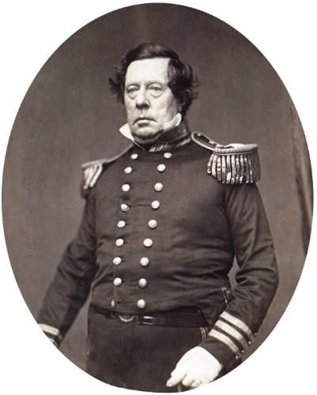
Commodore Matthew C. Perry
Japan had enjoyed its isolation from its inception in the 1630s through to the 18th century, but things were not to remain like this. It was in the late 18th century that the sakoku policy began to be breached by the Russians. The Russian Empire was expanding across Asia to the eastern extremities of the continent and this brought Russian ships to the waters north of Hokkaido, around the Kurils and Sakhalin. The Russian Adam Laxman attempted to negotiate with Japanese authorities for the possibility of trade and diplomacy in 1792, but was refused. Another Russian ambassador attempted to negotiate at Nagasaki in 1804-05 but was turned away. Russian attacks even occurred at Japanese settlements on Sakhalin and the Kuril Islands from 1806-07, and more followed from 1811-13. These prompted the shogunate to take action to strengthen coastal defences across the country. More frightening for Japan was the 1808 Phaeton incident, when the British frigate HMS Phaeton entered Nagasaki harbour to demand supplies while taking several Dutchmen hostage. It left after forcefully seizing supplies. Further minor encounters with British ships and other factors led to a greater enforcement of the sakoku edict. In 1825, an edict was issued for coastal batteries to fire on any foreign vessel that approached the coast. This remained in force for many years, but was tested intensely with the Morrison incident of 1837. The U.S merchant ship Morrison was fired upon while attempting to repatriate shipwrecked Japanese sailors. This was a guise as it also wanted to negotiate. It was repelled but Japanese authorities feared it was a British ship, and in fear of retaliation for any such act in the future they abandoned the policy in 1842. By the 1840s, Western nations began to hone in on Japan, but it was the United States that was the most intent.
In July 1853, a squadron of U.S naval vessels commanded by Commodore Matthew C. Perry entered Edo Bay. Perry revealed that he intended to deliver a letter to the Emperor (shogun) from U.S President Millard Fillmore and would not leave until he had done so, threatening the use of force. Abe Masahiro, the head of the Council of Elders who advised the shogun, made the decision to accept the letter, and negotiations began for organising a landing spot and ceremony. On July 14, 1853, Perry landed at Uraga with a select force of men and there was a reception that consisted of great ceremony. He announced that he would return the following spring to hear the response.
Perry now returned to Edo Bay, arriving there on February 13, 1854; this was much earlier than the Bakufu authorities had anticipated. Weeks of negotiations produced on March 31, 1854, the Convention of Kanagawa between the United States and Japan. Perry had achieved his primary and most important objective, establishing relations with Japan and effectively ending its sakoku policy after nearly 220 years. This treaty and its terms would have profound consequences for the Tokugawa Shogunate and Japanese politics for the next decade. The Japanese were surprised when in 1856, Townsend Harris arrived in Japan as the U.S consul with intentions to negotiate a far more comprehensive treaty. Months of negotiations between Harris and Abe's successor Hotta Masayoshi resulted in the Treaty of Amity and Commerce in 1858, the signing of which was much more controversial than Perry's due to the Emperor refusing permission to sign the treaty when Hotta attempted to get his approval in order to force agreement on the divided daimyo. This would cause dangerous fractures and divisions in opinion that accelerated the downfall of the Tokugawa.
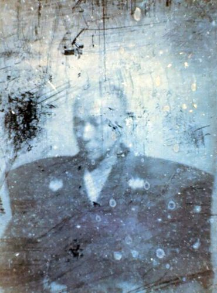
Shimazu Nariakira, daimyo of Satsuma, was the subject of the first Japanese photograph in 1857
The two main hotbeds of Tokugawa dissent were the provinces of Satsuma in Kyushu and Choshu in Western Honshu. Samurai from these clans were xenophobic and hostile to foreign incursion into Japan and in the early 1860s, they took matters into their own hands. In 1862, Charles Lennox Richardson, a British Hong-Kong-based merchant, was slain by Satsuma samurai when Richardson refused to dismount from his horse as the Satsuma lord's procession went by on the road. This death angered the British, who demanded an indemnity to be paid by Satsuma, who refused. The British then proceeded to bombard Kagoshima, the domain capital of Satsuma. An expulsion edict was issued by Emperor Komei in 1863 demanding the expulsion of all foreigners in Japan, which the Bakufu ignored. The Choshu domain, bordering the Shimonoseki Straits between Honshu and Kyushu, fired on Western ships passing through the straits. The Western powers would retaliate and bombard the Choshu shore batteries. Satsuma and Choshu had a historical rivalry that prevented them from cooperating with each other. Eventually, with some assistance from a samurai named Sakamoto Ryoma, Satsuma and Choshu created a secret alliance known as the Satcho alliance in 1866 to oppose the shogunate. The shogun Tokugawa Iemochi would die the same year and was succeeded by Tokugawa Yoshinobu. Yoshinobu, under increasing pressure from Satsuma and Choshu and who strove to prevent a civil war from erupting, tendered his resignation as shogun and for the title to be abolished, so that a council composed of daimyo could be formed to govern Japan. In 1867, Emperor Komei died and was succeeded by Emperor Meiji. Even though the shogun had resigned, some Satsuma and Choshu samurai were still not content and wanted to restore the Emperor to power. In January 1868, these men forcefully took control of the Imperial Palace in Kyoto and declared the restoration of imperial rule. This would become known as the Meiji Restoration, and this triggered the Boshin War between the Tokugawa and Imperial forces. The Imperial forces had defeated the Tokugawa and had captured Edo in May 1868. Some remnants continued fighting on Hokkaido until 1869 until they were subdued. This was the end of the Edo period and the beginning of the Meiji period, as well as modern Japanese history. The new Imperial leaders sought to modernise Japan in order to meet the West on an equal footing. The Emperor Meiji, then 15 years old, was moved from Kyoto to Edo, where he took up residence in the former Edo Castle. Edo became the Imperial capital and was renamed to Tokyo ("Eastern Capital").
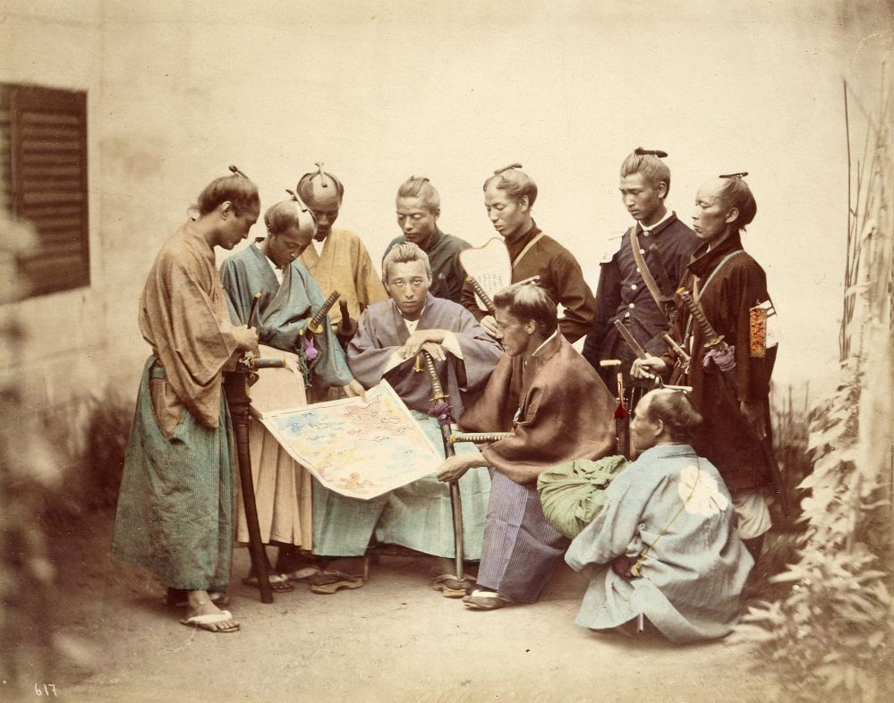
Samurai during the Boshin War in 1868